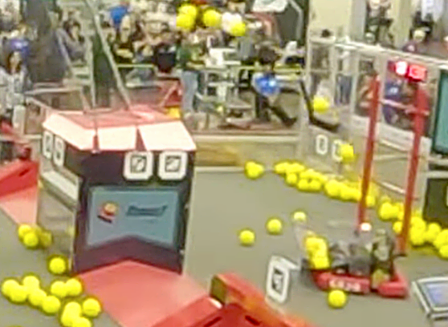

Shoot-on-the-Move
Targeting system · design & implementation
A turretless robot normally stops to line up each shot. I built a system that scores while driving: robot velocity offsets the aim point, an iterative solver leads the goal using flight-time data I measured, and the result is a 90%+ scoring rate on the move.